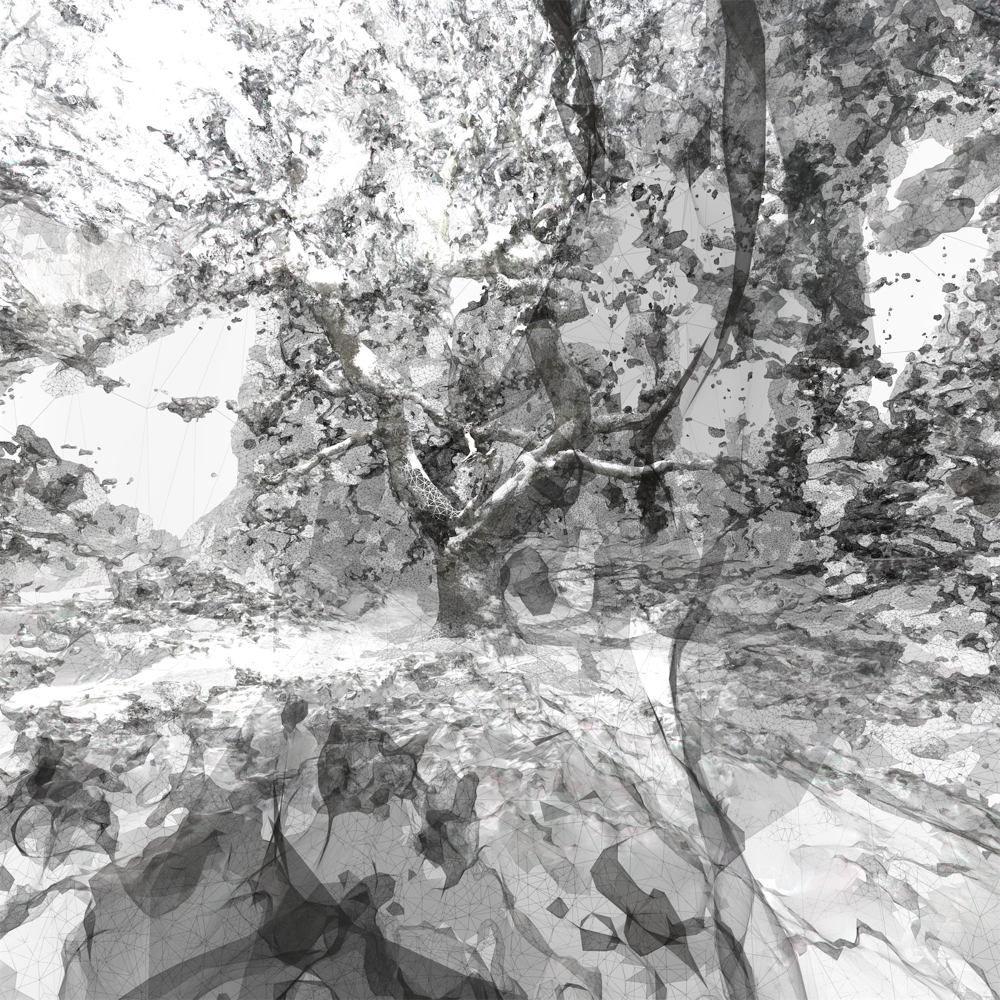

A series of videos and prints of virtually constructed oak trees on Hampstead Heath in
North London. They record walks taken during the pandemic by using a scanning process called photogrammetry. The video works are also accompanied by glitched A.I.
generated soundtracks.
'O(a)k Computer - Midsummer Night (scanned 01/08/2021)', is a
virtual journey through an
old oak tree on
Hampstead Heath, as well as a new sound piece which has been generated using an
artificial intelligence trained on the British 60s band - The Kinks.
Slowly gliding through a tree in North London where people sit during the long summer
days
to picnic and drink with their friends, as pockets of music waft through their bluetooth
speakers. The people are absent, and we’re left with a digital trace of the tree lit
from
the inside. Almost as if it’s the spirit of the tree containing memories of generations
of
people sitting under it, including in 1998 a group of kids clambering along its branches
for
my 5th birthday party. The scene has been virtually constructed using a technique
developed
for cartography and archaeology called photogrammetry. It’s a process which involves
moving
though a space with a camera and then using algorithms to calculate the 3D structures.
The
work started quite simply by taking my camera on an organic walk through a place very
personal to me and capturing images while I walked. The lack of data from what the lens
didn’t observe creates gaps, glitches and failures in this digital tapestry showing a
system
grappling with natures complexities.
The music which at times is glitchy and dissonant but other times melodic and upbeat has
been generated by an A.I. algorithm called Jukebox. This neural network has been trained
to
create music referencing the summer-y up-tempo sounds of The Kinks. It uses deep
learning to
listen to the complete discography of the band and can then start to predict the
likeliness
of the next bit of the sound wave going up or down. From this it can extrapolate and
start
to create whole new imaginary recordings of the timbres and textures of drums, guitars
and
even vocals. Twanging guitars and vinyl scratches flow into the lead vocalist mumbling
inaudible words. The Kinks were a local band who like me grew up around Hampstead Heath
and
their music is saturated with optimism, playfulness, and British wit.

O(a)k Computer - Lime Avenue East Heath (scanned 24/01/2021), Pigment print on
Somerset
Satin
33x33cm
O(a)k Computer - Midsummer Night scanned 01/08/2021, accompanied by an A.I. trained on
The
Kinks, 2021
O(a)k Computer - Making of Midsummer Night, 2021
O(a)k Computer - scanned 20/12/2020 accompanied by A.I. trained on Hans Zimmer
soundtracks, 2021